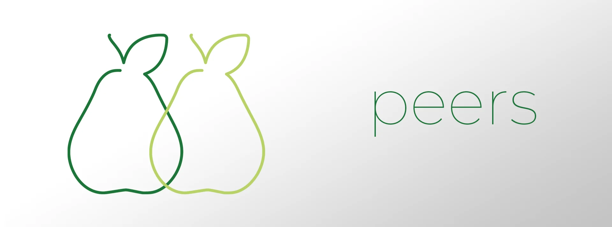

Mobile experience prototype
Peers
How might busy college students form meaningful connections around shared interests?

The idea
Playfully described as “Tinder, but for friends,” Peers matches students at participating institutions based solely on interests and pastimes.
The work
The concept moved through user need, interaction design, visual design, mobile prototyping, and a short explanatory video.